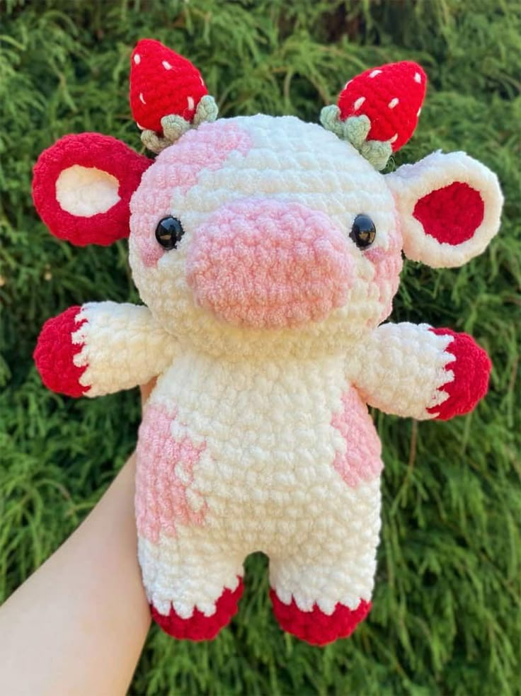
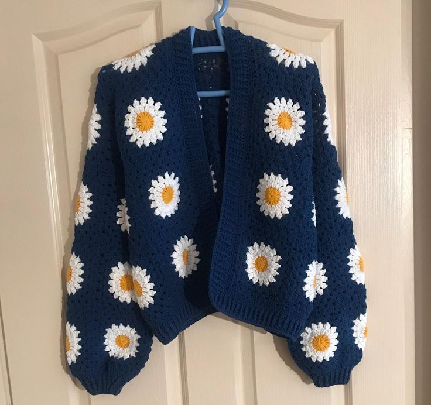
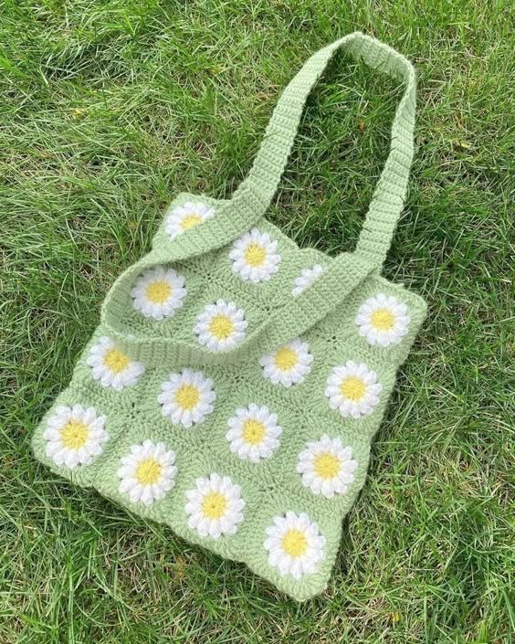
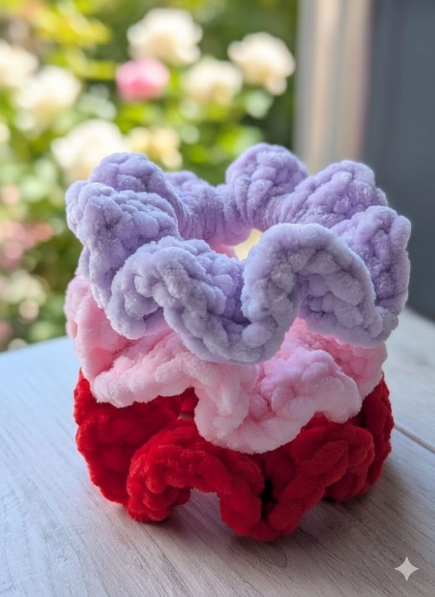

Plushies (Amigurumi)

Cardigans (Sweaters)

Bags

Bucket Hats

Scrunchies

"Handmade from the heart"
Heart Strings Crochet specializes in producing and distributing hand-made crochet items including:



